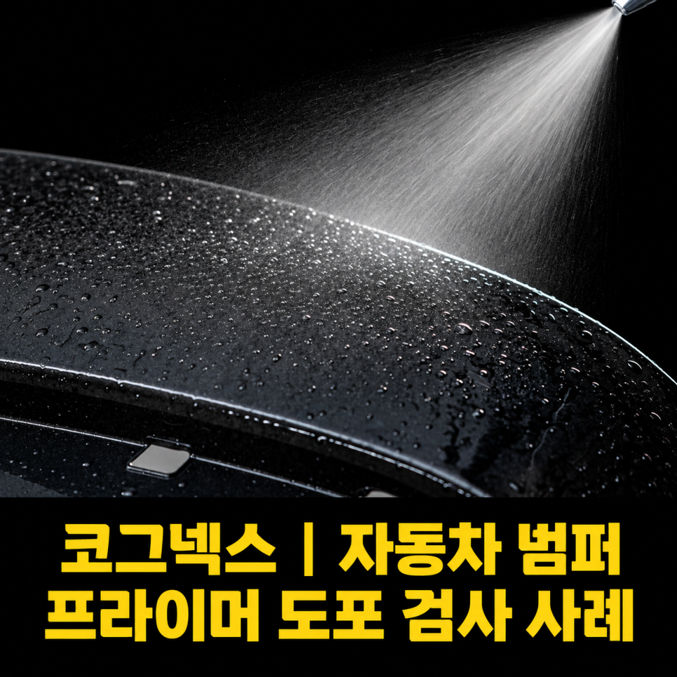
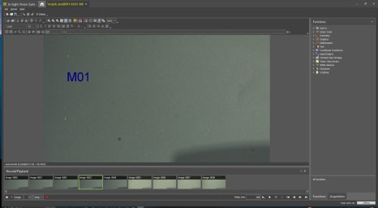
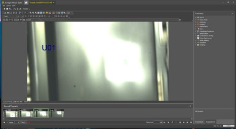
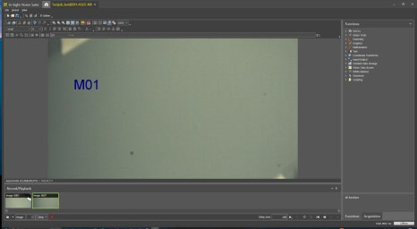

자동차 · 범퍼 · AI 비전검사
자동차 범퍼 프라이머 도포 AI 검사 시스템 사례
AI Classification
블랙·아이보리 색상과 유광·무광 표면을 함께 구분하도록 AI Classification을 적용한 프라이머 도포 검사 사례입니다. 표면 특성에 맞는 조명과 촬영 조건을 구성했습니다.

Project Summary
프로젝트 핵심 구성
- 산업
- 자동차 · 범퍼
- 검사·자동화 대상
- 자동차 범퍼 프라이머 도포 AI 검사
- 주요 기술
- AI Classification
- 적용 구분
- 프로젝트 사례
01 · Overview
프로젝트 개요
블랙·아이보리 색상과 유광·무광 표면을 함께 구분하도록 AI Classification을 적용한 프라이머 도포 검사 사례입니다. 표면 특성에 맞는 조명과 촬영 조건을 구성했습니다.
02 · Problem
프로젝트에서 해결해야 했던 문제
고객사는 자동차 범퍼에 프라이머를 도포한 후 도색 상태를 자동으로 검사하고자 했습니다.
검사 대상은 다음과 같이 여러 조건으로 구분되어 있었습니다.
블랙 유광
블랙 무광
아이보리 유광
아이보리 무광
색상뿐만 아니라 표면의 광택 상태까지 고려해서 구분해야 했기 때문에 일반적인 룰베이스 검사로는 안정적인 시스템을 구축하기 어려운 조건이었습니다.
기존에는 작업자의 육안 검사에 의존하고 있었지만,
검사 기준의 편차
작업자 피로도
휴먼에러
생산량 증가
등으로 인해 자동화의 필요성이 커지고 있었습니다.
- 색상과 광택 동시 구분
- 촬영 각도에 따른 밝기 변화
- 검사 기준 표준화
03 · System
검사·자동화 시스템 구성
블랙·아이보리 색상과 유광·무광 표면을 함께 구분하도록 AI Classification을 적용한 프라이머 도포 검사 사례입니다. 표면 특성에 맞는 조명과 촬영 조건을 구성했습니다.
4가지 제품 상태 학습
AI 분류
도포 상태 판정

04 · Inspection
프로젝트 배경
자동차 부품 생산라인에서는 도장 품질이 제품의 외관과 후속 공정 품질을 결정하는 중요한 요소입니다.
특히 프라이머(Primer) 도포 상태가 기준에 맞지 않으면 이후 도장 공정에도 영향을 줄 수 있기 때문에 생산 과정에서 안정적인 품질 검사가 반드시 필요합니다.
이번 프로젝트는 자동차 범퍼에 도포된 프라이머의 도색 상태를 AI Classification으로 자동 검사한 사례입니다.
사람은 쉽게 구분할 수 있지만 일반적인 머신비전으로는 어려운 유광·무광 구분과 색상 분류를 AI 기술로 해결하였으며, 합리적인 비용과 짧은 구축 기간으로 프로젝트를 성공적으로 완료하였습니다.
05 · Inspection
고객의 고민
고객사는 자동차 범퍼에 프라이머를 도포한 후 도색 상태를 자동으로 검사하고자 했습니다.
검사 대상은 다음과 같이 여러 조건으로 구분되어 있었습니다.
블랙 유광
블랙 무광
아이보리 유광
아이보리 무광
색상뿐만 아니라 표면의 광택 상태까지 고려해서 구분해야 했기 때문에 일반적인 룰베이스 검사로는 안정적인 시스템을 구축하기 어려운 조건이었습니다.
기존에는 작업자의 육안 검사에 의존하고 있었지만,
검사 기준의 편차
작업자 피로도
휴먼에러
생산량 증가
등으로 인해 자동화의 필요성이 커지고 있었습니다.
06 · Inspection
일반 머신비전으로는 쉽지 않은 검사
사람은 제품을 보면 유광과 무광을 쉽게 구분할 수 있습니다.
하지만 머신비전에서는 이야기가 다릅니다.
조명 조건과 촬영 각도에 따라 같은 제품도 광택이 다르게 표현될 수 있기 때문에 단순한 밝기나 색상만으로는 안정적인 검사가 어렵습니다.
이번 프로젝트 역시
색상이 서로 다르고
광택 상태도 다르며
생산 환경 변화까지 고려해야 하는
조건이었기 때문에 기존 룰베이스 방식만으로는 높은 신뢰성을 확보하기 어려웠습니다.



07 · Inspection
AI Classification으로 문제 해결
ASPEC은 이번 프로젝트에 AI Classification을 적용하였습니다.
복잡한 검사 조건을 하나씩 설정하는 대신,
블랙 유광
블랙 무광
아이보리 유광
아이보리 무광
각 제품을 AI가 학습하도록 구성하였습니다.
AI는 제품의 색상과 표면 특성을 함께 학습하여 사람이 판단하는 것과 유사한 방식으로 제품을 자동 분류할 수 있도록 시스템을 구축하였습니다.
08 · Inspection
조명 선정도 중요한 요소였습니다
AI가 모든 문제를 해결해 주는 것은 아닙니다.
AI가 안정적으로 판단할 수 있도록 제품 특성에 맞는 광학 조건을 만드는 과정도 매우 중요합니다.
이번 프로젝트에서는 자동차 범퍼의 표면 특성을 고려하여 적절한 조명과 촬영 조건을 구성하였고,
이를 기반으로 AI Classification을 적용하여 높은 검사 안정성을 확보할 수 있었습니다.
09 · Inspection
합리적인 비용, 빠른 구축
이번 프로젝트는 고가의 검사 장비를 사용하는 대신,
고객의 검사 목적에 적합한 머신비전 시스템을 선정하여 합리적인 비용으로 구축하였습니다.
또한 검사 방향을 초기 단계에서 명확하게 설정하여
짧은 기간 안에 시스템 구축과 현장 적용을 완료할 수 있었습니다.
자동차 생산라인은 설비 정지 시간이 곧 비용으로 이어지는 만큼,
빠른 구축과 안정적인 시운전 역시 중요한 프로젝트 목표였습니다.
10 · Inspection
이번 프로젝트를 통해 고객이 얻은 효과
이번 시스템 구축으로 고객사는 다음과 같은 효과를 얻을 수 있었습니다.
✔ 자동차 범퍼 프라이머 도포 자동 검사
✔ 유광·무광 자동 분류
✔ 다양한 색상 제품 자동 분류
✔ 작업자의 육안 검사 최소화
✔ 휴먼에러 감소
✔ AI Classification 적용
✔ 합리적인 구축 비용
✔ 짧은 구축 기간
✔ 생산성 향상
✔ 품질 기준 표준화
11 · Inspection
ASPEC의 생각
자동차 산업에서는 품질 기준이 매우 엄격하며, 작은 품질 편차도 고객 클레임이나 재작업으로 이어질 수 있습니다.
이번 프로젝트는 AI 기술을 활용하여 사람이 수행하던 도장 품질 검사를 자동화하고, 검사 기준을 표준화한 사례였습니다.
ASPEC은 자동차, 전기차 부품, 제약·바이오, 식품, 전자부품 등 다양한 산업 분야에서 머신비전과 AI 비전검사 프로젝트를 수행하며 축적한 경험을 바탕으로 고객의 생산 환경에 가장 적합한 솔루션을 제안하고 있습니다.
Operation
현장 적용과 운영 조건
블랙·아이보리 색상과 유광·무광 표면을 함께 구분하도록 AI Classification을 적용한 프라이머 도포 검사 사례입니다. 표면 특성에 맞는 조명과 촬영 조건을 구성했습니다.
- 색상과 광택 동시 구분
- 촬영 각도에 따른 밝기 변화
- 검사 기준 표준화
Result
적용 효과
- 자동차 범퍼 프라이머 도포 자동 검사
- 유광·무광 자동 분류
- 다양한 색상 제품 자동 분류
- 작업자의 육안 검사 최소화
- 휴먼에러 감소
- AI Classification 적용
- 합리적인 구축 비용
- 짧은 구축 기간
- 생산성 향상
- 품질 기준 표준화
Engineering
ASPEC의 머신비전 시스템 설계 방식
검사 대상의 재질과 형상, 설치 공간과 생산 조건에 맞춰 장비·광학·소프트웨어와 설비 연동을 함께 검토합니다.
- 색상과 광택 동시 구분
- 촬영 각도에 따른 밝기 변화
- 검사 기준 표준화
08 · Related Cases
관련 구축사례
비슷한 공정의 자동화를 검토하고 계신가요?
검사 대상과 불량 샘플, 설치 공간, 택타임을 알려주시면 적용 구성을 검토해 드립니다.